Automator and Services
Building on the dramatic success of Automator and Services (Reborn in Snow Leopard), Automator in Lion becomes a smoother more powerful creator of automation recipes. Here are some of the new features for Automator and Services in Lion:
Duplicating Workflows to Other Template Types
The challenge of changing an existing Automator workflow into another type of Automator plugin has been resolved. Workflows can now be duplicated to another template types, such as from an applet to a service, or from a service to a print plug-in.
Simply select Duplicate To…
from the Automator File
menu and a copy of the frontmost workflow will be created, displaying the template picker sheet allowing you to choose the type of workflow plugin to apply to the copied workflow.
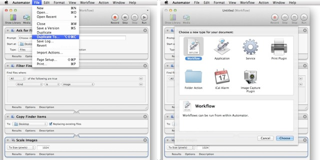
Easy Installation of Actions and Services
Installer applications are no longer required in order to add an Automator action or service to your library of actions and services. Just double-click the action or service workflow files, and you will presented with a dialog prompting you to approve the installation of the selected action and service workflow files. If approved, any selected actions will be placed in the user Library > Automator folder, and any selected service workflow files will be placed in the user Library > Services folder, and be ready for use immediately.
NOTE: see the sidebar entry Missing Library Folder?
to learn how to edit the contents of these special folders.
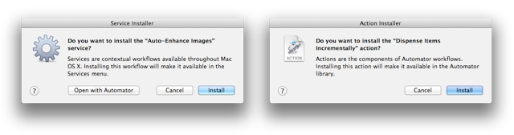
Versions
Like many other document-based applications in Lion, Automator fully supports the new Versions feature so you can easily return a workflow document to a previously saved state.
To return a saved document to an earlier version, choose Browse All Versions…
from the popup menu at the top right of the workflow window, and the screen will switch to the Time Machine-like view where you can browse and restore to a previously saved version.
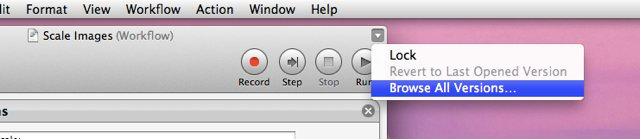
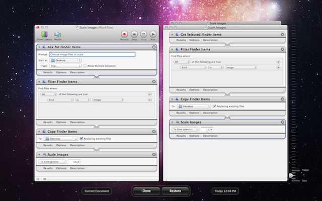
New Actions
Included in Automator for Lion are new actions with a focus on creating content for online and iOS distribution. There are actions for turning text into images, text documents into EPUB books, also actions for displaying and retrieving web content, and a set of media actions (services) enabling the desktop encoding of video and audio files.
Here are a list of the important new actions:
- Text To EPUB File • This action creates an iBooks-compatible EPUB file from the text files passed to it. Optionally, the book can contain movie, audio, and image files chosen by the user. Optionally, the formatting of the passed RTF file can be preserved in the book. (learn more)
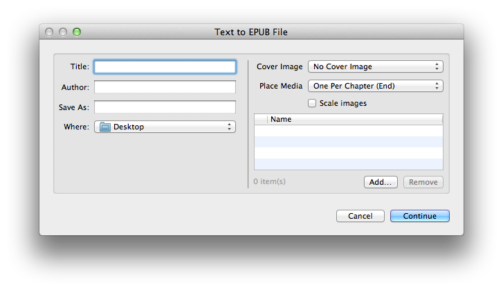
- Website PopUp • This action displays in a floating HUD, the webpage of the URL passed to it. (learn more)
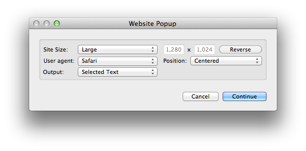
- Create Banner Image from Text • This can creates an image (with an alpha channel) of the text passed to it using the chosen style settings. Optionally, the current styling of the passed RTF text can be used instead. (learn more)
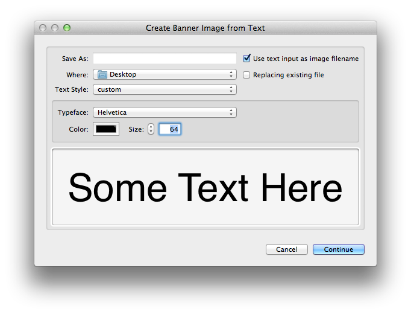
- Get Contents of Webpages (Webarchive type) • Automator in Lion introduces a new workflow data type: web content. This action will retrieve the contents of webpages located at the passed URLs, as Mac OS X webarchive data. (learn more)
- Save Images from Web Content • This action takes as input, web content, and then extacts any images within the passed datat and writes them to a folder on disk. The example workflow shown below, will extract the images from the current webpage displayed in Safari: (learn more)
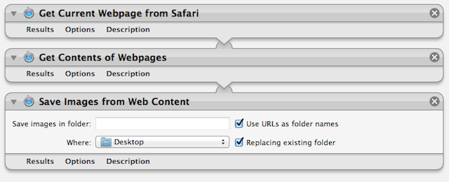
- Encode to MPEG Audio • Encodes AIF, WAV, and CAF files into MPEG audio files using the chosen settings. The action is an interface to the new afconvert command-line utility, and is used in the new Lion Finder Service
Encode Selected Audio Files.
(learn more)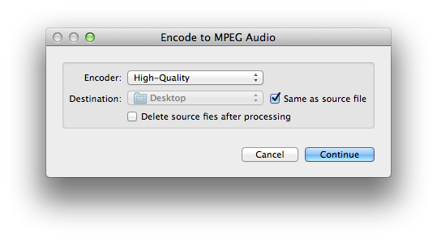
- Encode Media • Encode movie source files into MPEG content using the chosen settings. The action is an interface to the new avconvert command-line utility, and is used with the new Lion Finder Service
Encode Selected Movie Files.
(learn more)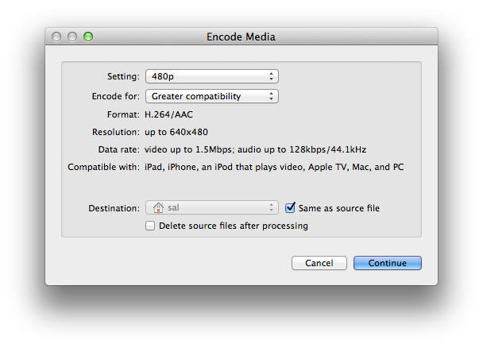
- Create Annotated Media File • This action creates annotated versions of passed movie files. The action is an interface to the new avmetadata command-line utility. (learn more)
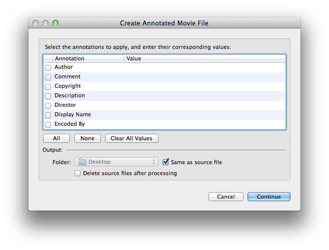
Enhanced RTF Support
Many of the text-based actions in Automator now support the use of Rich Text Format strings. For example, the new Text To EPUB File will accept RFT text as inut, retaining the formatting when generating a new EPUB file from the passed text. The new Create Banner Image from Text action also supports RTF text as input.
In addition, Rich Text is now an input type for creating Automator Services.
New Filtering Options for Text Input in Services
Data Detectors support in creating Automator service workflows has been enhanced in Lion. Text objects, such as URLs, dates, or phone numbers, can now be both detected and filtered from selected text used as input to service workflows. This means that you now have the option to use either the entire text selection containing the text objects as input to the workflow, or use just the detected text objects themselves as input.
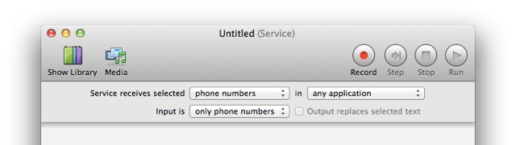
(below) An example service, created using the new Data Detectors input filtering options, that enables to dialing of phone numbers embedded within text in a web page:
New Input Controls
Many actions have the option to ignore input from a previous action in a workflow. To make it easier to access this control, it has been moved into the action options drawer, which is displayed when you click the Options button at the bottom left of the action view.
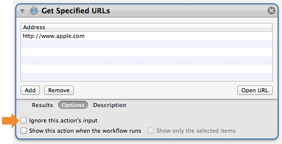
New Services
Lion contains two new services for encoding movie or audio files on the desktop. Both services are enabled by default, and will appear in the Finder's action or contextual menus when the appropriate types of files are selected:
- Encode Selected Movie Files (learn more)
- Encode Selected Audio Files (learn more)